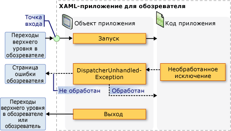

Общие сведения об управлении приложением
Все приложения имеют тенденцию совместно использовать общий набор функциональных возможностей, который применяется к реализации приложения и управлению им. В этом разделе представлен обзор функциональных возможностей в Application класс для создания и управления приложениями.
Класс Application
В WPF, функциональные возможности области определения приложения инкапсулируются в Application класса. Application Класс включает в себя следующие функциональные возможности:
отслеживание и взаимодействие со временем существования приложения;
извлечение и обработка параметров командной строки;
обнаружение необработанных исключений и реагирование на них;
совместное использование свойств области определения приложения и ресурсов;
управление окнами в автономных приложениях;
отслеживание навигации и управление ею.
Выполнение стандартных задач с помощью класса приложения
Если вы не интересуют все аспекты Application класса, в следующей таблице перечислены некоторые из наиболее распространенных задач Application и способах их выполнения. Чтобы получить дополнительные сведения и образец кода, просмотрите связанные API и разделы.
| Задача | Подход |
|---|---|
| Получение объекта, представляющего текущее приложение | Используйте свойство Application.Current. |
| Добавление заставки в приложение | См. в разделе Добавление в WPF-приложение экрана-заставки. |
| Запуск приложения | Воспользуйтесь методом Application.Run. |
| Остановка приложения | Используйте Shutdown метод Application.Current объекта. |
| Получение аргументов из командной строки | Обрабатывать Application.Startup и использовать StartupEventArgs.Args свойство. Например, см. в разделе Application.Startup событий. |
| Получение и задание кода завершения приложения | Задайте ExitEventArgs.ApplicationExitCode свойство в Application.Exit обработчик событий или вызова Shutdown метод и передайте целое число. |
| Обнаружение необработанных исключений и реагирование на них | Обрабатывать DispatcherUnhandledException событий. |
| Получение и задание ресурсов области определения приложения | Используйте свойство Application.Resources. |
| Использование словаря ресурсов области определения приложения | См. в разделе использование словаря ресурсов области определения приложения. |
| Получение и задание свойств области определения приложения | Используйте свойство Application.Properties. |
| Получение и сохранение состояния приложения | См. в разделе сохранение и восстановление свойств области определения приложения в сеансах приложения. |
| Управление файлами данных без кода, включая файлы ресурсов, файлы содержимого и файлы исходного сайта. | См. в разделе ресурса приложения WPF, содержимое и файлы данных. |
| Управление окнами в автономных приложениях | См. раздел Общие сведения об окнах WPF. |
| Отслеживание навигации и управление ею | См. в разделе Общие сведения о переходах. |
Определение приложения
Чтобы использовать функциональные возможности Application класса, необходимо реализовать определение приложения. Определение приложения WPF — это класс, производный от Application и настраивается с помощью специальная настройка MSBuild.
Реализация определения приложения
Типичное определение приложения WPF реализуется с помощью разметки и кода. Это позволяет использовать разметку для декларативного задания свойств и ресурсов приложения и регистрации событий, а обработку событий и поведение приложения реализовывать в коде программной части.
В следующем примере показано, как реализовать определение приложения с помощью разметки и кода программной части:
<Application
xmlns="http://schemas.microsoft.com/winfx/2006/xaml/presentation"
xmlns:x="http://schemas.microsoft.com/winfx/2006/xaml"
x:Class="SDKSample.App" />
using System.Windows;
namespace SDKSample
{
public partial class App : Application { }
}
Warning
It looks like the sample you are looking for does not exist.
Для совместной работы файла разметки и файла кода программной части должны выполняться указанные ниже условия.
В разметке
Applicationэлемент должен включатьx:Classатрибута. При построении приложения существованиеx:Classв разметке файл вызывает MSBuild для созданияpartialкласс, производный от Application и имеет имя, которое задается параметромx:Classатрибута. Это требуется добавить объявление пространства имен XML для схемы XAML (xmlns:x="http://schemas.microsoft.com/winfx/2006/xaml").В коде программной части класс должен быть
partialкласс с тем же именем, который задается параметромx:Classатрибут в разметке и должен быть производным от Application. Это позволяет файл кода должно быть связано сpartialкласса, созданного для файла разметки при построении приложения (см. в разделе построение приложения WPF).
Note
При создании нового проекта приложения WPF или проекта приложения браузера WPF с помощью Visual Studio, определение приложения включается по умолчанию и определяется с помощью разметки и кода.
Этот код является минимумом, необходимым для реализации определения приложения. Однако на дополнительную конфигурацию MSBuild должен выполняться в определении приложения перед построением и запуском приложения.
Настройка определения приложения для MSBuild
Автономные приложения и приложения браузера XAML (XBAP) требуют реализации инфраструктуры определенного уровня перед своим запуском. Наиболее важной частью этой инфраструктуры является точка входа. При запуске приложения пользователем операционная система вызывает точку входа, которая является известной функцией для запуска приложений.
Обычно разработчикам требовалось писать весь этот код или его часть самостоятельно в зависимости от технологии. Тем не менее, WPF создает этот код автоматически, при настройке файла разметки для определения приложения в качестве MSBuild ApplicationDefinition элемента, как показано в следующем файле проекта MSBuild:
<Project
DefaultTargets="Build"
xmlns="http://schemas.microsoft.com/developer/msbuild/2003">
...
<ApplicationDefinition Include="App.xaml" />
<Compile Include="App.xaml.cs" />
...
</Project>
Так как файл кода содержит код, он помечается как MSBuild Compile элементов, что является нормальным.
Применение этих конфигураций MSBuild к файлам разметки и кода программной части определения приложения заставляет MSBuild для создания кода следующим образом:
using System;
using System.Windows;
namespace SDKSample
{
public class App : Application
{
public App() { }
[STAThread]
public static void Main()
{
// Create new instance of application subclass
App app = new App();
// Code to register events and set properties that were
// defined in XAML in the application definition
app.InitializeComponent();
// Start running the application
app.Run();
}
public void InitializeComponent()
{
// Initialization code goes here.
}
}
}
Warning
It looks like the sample you are looking for does not exist.
Результирующий код дополняет ваше определение приложения кодом инфраструктуры, которая включает в себя метод точки входа Main. STAThreadAttribute Атрибут применяется к Main метод, чтобы указать, что основной поток пользовательского интерфейса для приложения WPF является потоком STA, который необходим для приложений WPF. При вызове Main создает новый экземпляр класса App перед вызовом InitializeComponent метод для регистрации событий и задания свойств, реализованных в разметке. Так как InitializeComponent создается автоматически, не нужно явно вызывать InitializeComponent из определения приложения как для Page и Window реализаций. Наконец Run метод вызывается для запуска приложения.
Получение текущего приложения
Так как функциональные возможности Application являются общими для всего приложения, может существовать только один экземпляр Application класса на AppDomain. Для применения этого, Application класс реализован в виде singleton-класса (см. в разделе Реализация Singleton в C# ), который создает один экземпляр себя и предоставляет общий доступ к нему с помощью staticCurrent свойство.
Ниже показано, как получить ссылку на Application объект для текущего AppDomain.
// Get current application
Application current = App.Current;
Warning
It looks like the sample you are looking for does not exist.
Current Возвращает ссылку на экземпляр Application класса. Если требуется ссылка на вашей Application производного класса, необходимо привести значение Current свойства, как показано в следующем примере.
// Get strongly-typed current application
App app = (App)App.Current;
Warning
It looks like the sample you are looking for does not exist.
Вы можете проверить значение Current в любой момент времени существования Application объекта. Однако следует соблюдать осторожность. После Application создается экземпляр класса, в течение во время которого состояние Application непредсказуемо. В течение этого периода Application выполняет различные задачи инициализации, необходимые в коде для выполнения, включая установку инфраструктуры приложения, настройку свойств и регистрацию событий. Если вы попытаетесь использовать Application объекта в течение этого периода, код может иметь непредвиденные результаты, особенно в том случае, если он зависит от различных Application задаваемые свойства.
Когда Application завершает свою работу инициализации, начинается его время существования.
Время существования приложения
Время существования приложения WPF отмечается несколько событий, вызываемых Application сообщить вам о был начат приложения, активировано, деактивации и завершает работу.
Заставка
Начиная с версии .NET Framework 3.5 SP1, можно указать изображение, которое может использоваться в заставке или экран-заставка. SplashScreen Класс позволяет легко отобразить заставку во время загрузки приложения. SplashScreen Окно создается и отображается перед Run вызывается. Дополнительные сведения см. в разделе время запуска приложения и Добавление в WPF-приложение экрана-заставки.
Запуск приложения
После Run вызывается и инициализации приложения, оно будет готово к запуску. Этот момент обозначается при Startup события:
using System.Windows;
namespace SDKSample
{
public partial class App : Application
{
void App_Startup(object sender, StartupEventArgs e)
{
// Application is running
}
}
}
Warning
It looks like the sample you are looking for does not exist.
На этом этапе в жизни приложения, наиболее распространенный способ — показать пользовательский Интерфейс.
Отображение пользовательского интерфейса
Большинство автономных приложений Windows откройте Window когда начинается выполнение. Startup Обработчик событий — в одном месте, откуда это можно сделать, как показано в следующем примере кода.
<Application
xmlns="http://schemas.microsoft.com/winfx/2006/xaml/presentation"
xmlns:x="http://schemas.microsoft.com/winfx/2006/xaml"
x:Class="SDKSample.App"
Startup="App_Startup" />
using System.Windows;
namespace SDKSample
{
public partial class App : Application
{
void App_Startup(object sender, StartupEventArgs e)
{
// Open a window
MainWindow window = new MainWindow();
window.Show();
}
}
}
Warning
It looks like the sample you are looking for does not exist.
Note
Первый Window для реализации в автономное приложение становится главного окна приложения по умолчанию. Это Window объект ссылается Application.MainWindow свойство. Значение MainWindow свойство может быть изменено программными средствами, если другое окно первый экземпляр Window должно быть главного окна.
При первом запуске приложение XBAP, он скорее всего, чтобы перейти Page. Это показано в приведенном ниже коде.
<Application
x:Class="SDKSample.App"
xmlns="http://schemas.microsoft.com/winfx/2006/xaml/presentation"
xmlns:x="http://schemas.microsoft.com/winfx/2006/xaml"
Startup="App_Startup" />
using System;
using System.Windows;
using System.Windows.Navigation;
namespace SDKSample
{
public partial class App : Application
{
void App_Startup(object sender, StartupEventArgs e)
{
((NavigationWindow)this.MainWindow).Navigate(new Uri("HomePage.xaml", UriKind.Relative));
}
}
}
Warning
It looks like the sample you are looking for does not exist.
Если вы обрабатываете Startup открывать только Window или перейдите к Page, можно задать StartupUri атрибут в разметке.
В следующем примере показано, как использовать StartupUri из отдельного приложения, чтобы открыть Window.
<Application
xmlns="http://schemas.microsoft.com/winfx/2006/xaml/presentation"
StartupUri="MainWindow.xaml" />
В следующем примере показано, как использовать StartupUri из XBAP, чтобы перейти к Page.
<Application
xmlns="http://schemas.microsoft.com/winfx/2006/xaml/presentation"
StartupUri="HomePage.xaml" />
Эта разметка действует так же, как и предыдущий код для открытия окна.
Note
Дополнительные сведения о навигации, см. в разделе Общие сведения о переходах.
Вам нужно обрабатывать Startup событие, чтобы открыть Window необходимо создать его с помощью конструктора не по умолчанию, необходимо задать его свойства либо подписаться на его события перед его отображением или вам необходимо обработать любые аргументы командной строки, были заданы при запуске приложения.
Обработка аргументов командной строки
В Windows автономные приложения можно запустить из командной строки или с рабочего стола. В обоих случаях аргументы командной строки могут быть переданы приложению. В приведенном ниже примере показано приложение, которое запускается с одним аргументом командной строки /StartMinimized:
wpfapplication.exe /StartMinimized
Во время инициализации приложения WPF, Получает аргументы командной строки из операционной системы и передает их Startup обработчик событий через Args свойство StartupEventArgs параметр. Аргументы командной строки можно извлечь и сохранить с помощью приведенного ниже кода.
<Application
xmlns="http://schemas.microsoft.com/winfx/2006/xaml/presentation"
xmlns:x="http://schemas.microsoft.com/winfx/2006/xaml"
x:Class="SDKSample.App"
Startup="App_Startup" />
using System.Windows;
namespace SDKSample
{
public partial class App : Application
{
void App_Startup(object sender, StartupEventArgs e)
{
// Application is running
// Process command line args
bool startMinimized = false;
for (int i = 0; i != e.Args.Length; ++i)
{
if (e.Args[i] == "/StartMinimized")
{
startMinimized = true;
}
}
// Create main application window, starting minimized if specified
MainWindow mainWindow = new MainWindow();
if (startMinimized)
{
mainWindow.WindowState = WindowState.Minimized;
}
mainWindow.Show();
}
}
}
Warning
It looks like the sample you are looking for does not exist.
Код обрабатывает Startup проверяемый ли /StartMinimized аргумент командной строки; Если Да, он открывает главное окно с WindowState из Minimized. Обратите внимание, что поскольку WindowState свойства необходимо задать значение программно, основной Window должен быть явным образом открыто в коде.
XBAP-приложения не может получить и обработать аргументы командной строки, так как они запускаются с помощью развертывания ClickOnce (см. в разделе развертывание приложений WPF). Однако они могут извлекать и обрабатывать строковые параметры запроса из URL-адресов, которые используются для их запуска.
Активация и отключение приложения
Windows позволяет пользователям переключаться между приложениями. Наиболее простой способ — использовать клавиши ALT+TAB. Приложения можно переключить только в том случае, если оно содержит видимое Window , пользователь может выбрать. Выбранного в данный момент Window — активного окна (также известный как окно переднего плана) и является Window , получающий ввод данных пользователем. Приложение с активным окном является активное приложение (или приложения переднего плана). Приложение становится активным в указанных ниже случаях.
Оно запускается и отображает Window.
Пользователь переключается из другого приложения, выбрав Window в приложении.
Вы может определить, когда приложение активируется при обработке Application.Activated событий.
Аналогичным образом приложение может стать неактивным в указанных ниже случаях.
Пользователь переключается на другое приложение из текущего.
Приложение завершает работу.
Можно обнаружить, когда приложение становится неактивным, обрабатывая Application.Deactivated событий.
Ниже показано, как обрабатывать Activated и Deactivated событий, чтобы определить, активно ли приложение.
<Application
xmlns="http://schemas.microsoft.com/winfx/2006/xaml/presentation"
xmlns:x="http://schemas.microsoft.com/winfx/2006/xaml"
x:Class="SDKSample.App"
StartupUri="MainWindow.xaml"
Activated="App_Activated"
Deactivated="App_Deactivated" />
using System;
using System.Windows;
namespace SDKSample
{
public partial class App : Application
{
bool isApplicationActive;
void App_Activated(object sender, EventArgs e)
{
// Application activated
this.isApplicationActive = true;
}
void App_Deactivated(object sender, EventArgs e)
{
// Application deactivated
this.isApplicationActive = false;
}
}
}
Warning
It looks like the sample you are looking for does not exist.
Объект Window также можно активировать и деактивировать. Дополнительные сведения см. в разделах Window.Activated и Window.Deactivated.
Note
Ни Application.Activated , ни Application.Deactivated вызывается для XBAP.
Завершение работы приложения
Время существования приложения заканчивается, когда оно завершает работу, что может возникнуть по указанным ниже причинам.
Пользователь закрывает каждый Window.
Пользователь закрывает главное Window.
Пользователь завершает сеанс Windows, системы или завершая.
Выполнено специальное условие для приложения.
Чтобы помочь в управлении завершением работы приложения, Application предоставляет Shutdown метод, ShutdownMode свойство и SessionEnding и Exit события.
Note
Shutdown может вызываться только из приложений, имеющих UIPermission. WPF автономных приложений всегда есть это разрешение. Тем не менее XBAP-приложения в песочнице с частичным доверием безопасности зоны Интернета не завершает работу.
Режим завершения работы
Большинство приложений завершают работу при закрытии главного окна или всех окон. Иногда, однако, другие условия конкретного приложения могут определить, когда приложение завершает работу. Можно указать условия, при которых приложение завершит работу, задав ShutdownMode с одним из следующих ShutdownMode значений перечисления:
Значение по умолчанию ShutdownMode является OnLastWindowClose, что означает, что приложение автоматически завершает работу при закрытии пользователем последнего окна в приложении. Тем не менее, если приложение должно завершить работу при закрытии главного окна, WPF автоматически делает это, если задать ShutdownMode для OnMainWindowClose. Эти действия показаны в следующем примере.
<Application
xmlns="http://schemas.microsoft.com/winfx/2006/xaml/presentation"
xmlns:x="http://schemas.microsoft.com/winfx/2006/xaml"
x:Class="SDKSample.App"
ShutdownMode="OnMainWindowClose" />
При наличии условия завершения работы приложения, следует установить ShutdownMode для OnExplicitShutdown. В данном случае это необходимо завершить работу приложения путем явного вызова Shutdown метода; в противном случае приложение будет продолжать, даже если закрыты все окна. Обратите внимание, что Shutdown вызывается неявно при ShutdownMode либо OnLastWindowClose или OnMainWindowClose.
Note
ShutdownMode можно задать из XBAP, но он учитывается; приложение XBAP всегда завершает работу при его переходе в браузере или при закрытии браузера, на котором размещается приложение XBAP. Дополнительные сведения см. в разделе Общие сведения о переходах.
Завершение сеанса
Условия завершения работы, описываемым ShutdownMode свойства зависят от конкретного приложения. Однако в некоторых случаях приложение может завершить работу в результате выполнения внешнего условия. Наиболее обычное внешнее условие возникает, когда пользователь завершает сеанс Windows при выполнении следующих действий:
выход из системы;
завершение работы;
перезапуск;
спящий режим.
Чтобы обнаружить при завершении сеанса Windows, можно обрабатывать SessionEnding событий, как показано в следующем примере.
<Application
xmlns="http://schemas.microsoft.com/winfx/2006/xaml/presentation"
xmlns:x="http://schemas.microsoft.com/winfx/2006/xaml"
x:Class="SDKSample.App"
StartupUri="MainWindow.xaml"
SessionEnding="App_SessionEnding" />
using System.Windows;
namespace SDKSample
{
public partial class App : Application
{
void App_SessionEnding(object sender, SessionEndingCancelEventArgs e)
{
// Ask the user if they want to allow the session to end
string msg = string.Format("{0}. End session?", e.ReasonSessionEnding);
MessageBoxResult result = MessageBox.Show(msg, "Session Ending", MessageBoxButton.YesNo);
// End session, if specified
if (result == MessageBoxResult.No)
{
e.Cancel = true;
}
}
}
}
Warning
It looks like the sample you are looking for does not exist.
В этом примере код проверяет ReasonSessionEnding свойства, чтобы определить способ окончания сеанса Windows. Он использует это значение, чтобы отобразить сообщение подтверждения для пользователя. Если пользователю не нужно завершать сеанс, код задает Cancel для true чтобы запретить завершение сеанса Windows.
Note
SessionEnding вызывается для XBAP.
Exit
При завершении работы приложения может возникнуть необходимость выполнить окончательную обработку, например сохранение состояния приложения. В подобных случаях можно обрабатывать Exit событий, как App_Exit обработчик события выполняет в следующем примере. Он определен в качестве обработчика событий в App.xaml файл. Его реализация выделяется в App.xaml.cs и Application.xaml.vb файлов.
<Application
xmlns="http://schemas.microsoft.com/winfx/2006/xaml/presentation"
xmlns:x="http://schemas.microsoft.com/winfx/2006/xaml"
x:Class="SDKSample.App"
StartupUri="MainWindow.xaml"
Startup="App_Startup"
Exit="App_Exit">
<Application.Resources>
<SolidColorBrush x:Key="ApplicationScopeResource" Color="White"></SolidColorBrush>
</Application.Resources>
</Application>
using System.Windows;
using System.IO;
using System.IO.IsolatedStorage;
namespace SDKSample
{
public partial class App : Application
{
string filename = "App.txt";
public App()
{
// Initialize application-scope property
this.Properties["NumberOfAppSessions"] = 0;
}
private void App_Startup(object sender, StartupEventArgs e)
{
// Restore application-scope property from isolated storage
IsolatedStorageFile storage = IsolatedStorageFile.GetUserStoreForDomain();
try
{
using (IsolatedStorageFileStream stream = new IsolatedStorageFileStream(filename, FileMode.Open, storage))
using (StreamReader reader = new StreamReader(stream))
{
// Restore each application-scope property individually
while (!reader.EndOfStream)
{
string[] keyValue = reader.ReadLine().Split(new char[] {','});
this.Properties[keyValue[0]] = keyValue[1];
}
}
}
catch (FileNotFoundException ex)
{
// Handle when file is not found in isolated storage:
// * When the first application session
// * When file has been deleted
}
}
private void App_Exit(object sender, ExitEventArgs e)
{
// Persist application-scope property to isolated storage
IsolatedStorageFile storage = IsolatedStorageFile.GetUserStoreForDomain();
using (IsolatedStorageFileStream stream = new IsolatedStorageFileStream(filename, FileMode.Create, storage))
using (StreamWriter writer = new StreamWriter(stream))
{
// Persist each application-scope property individually
foreach (string key in this.Properties.Keys)
{
writer.WriteLine("{0},{1}", key, this.Properties[key]);
}
}
}
}
}
Warning
It looks like the sample you are looking for does not exist.
Полный пример см. в разделе сохранение и восстановление области определения приложения свойства в сеансах приложения.
Exit может обрабатываться автономными приложениями и XBAP-приложения. Для приложения XBAP Exit вызывается в следующих случаях:
Приложение XBAP будет выполнен переход от.
В Internet Explorer 7, при закрытии вкладки, на котором размещается приложение XBAP.
Закрывается браузер.
Код выхода
Приложения, как правило, запускаются операционной системой в ответ на запрос пользователя. Однако приложение может быть запущено другим приложением для выполнения определенной задачи. При завершении работы запущенного приложения приложению, которое его запустило, может понадобиться выяснить условие, при котором запущенное приложение завершает работу. В таких ситуациях Windows позволяет приложениям вернуть код выхода приложения при завершении работы. По умолчанию для приложений WPF возвращают значение кода выхода 0.
Note
При отладке из Visual Studio, код выхода приложения отображается в вывода окно, когда приложение завершает работу, в сообщении, выглядит следующим образом:
The program '[5340] AWPFApp.vshost.exe: Managed' has exited with code 0 (0x0).
При открытии вывода окно, нажав кнопку выходные данные на представление меню.
Чтобы изменить код выхода, вы можете вызвать Shutdown(Int32) перегрузки, который принимает целочисленный аргумент для кода выхода:
// Shutdown and return a non-default exit code
Application.Current.Shutdown(-1);
Warning
It looks like the sample you are looking for does not exist.
Можно определить значение кода выхода и изменить его, обработав Exit событий. Exit Обработчику события передаются ExitEventArgs который обеспечивает доступ к коду выхода с ApplicationExitCode свойство. Дополнительные сведения см. в разделе Exit.
Note
Можно задать код выхода в автономных приложениях и XBAP-приложения. Однако значение кода выхода игнорируется для XBAP.
Необработанные исключения
Иногда приложение может завершить работу из-за неправильного состояния, например когда создается непредвиденное исключение. В этом случае в приложении может не быть кода для обнаружения и обработки исключения. Исключение такого типа является необработанным. Перед закрытием приложения выводится уведомление, похожее на показанное на рисунке ниже.
С точки зрения работы пользователя такое поведение приложения по умолчанию лучше переопределить, выполнив некоторые или все следующие действия:
отображение понятных для пользователя сведений;
попытка продолжить выполнение приложения;
Запись подробных, понятных разработчику особых сведений в журнале событий Windows.
Реализация этой поддержки зависит от возможности обнаружить необработанные исключения, который является то, что DispatcherUnhandledException для события.
<Application
xmlns="http://schemas.microsoft.com/winfx/2006/xaml/presentation"
xmlns:x="http://schemas.microsoft.com/winfx/2006/xaml"
x:Class="SDKSample.App"
StartupUri="MainWindow.xaml"
DispatcherUnhandledException="App_DispatcherUnhandledException" />
using System.Windows;
using System.Windows.Threading;
namespace SDKSample
{
public partial class App : Application
{
void App_DispatcherUnhandledException(object sender, DispatcherUnhandledExceptionEventArgs e)
{
// Process unhandled exception
// Prevent default unhandled exception processing
e.Handled = true;
}
}
}
Warning
It looks like the sample you are looking for does not exist.
DispatcherUnhandledException Обработчику события передаются DispatcherUnhandledExceptionEventArgs параметр, содержащий контекстные сведения, касающиеся необработанного исключения, включая само исключение (DispatcherUnhandledExceptionEventArgs.Exception). Эту информацию можно использовать для определения способа обработки исключений.
При обработке DispatcherUnhandledException, следует задать DispatcherUnhandledExceptionEventArgs.Handled свойства true; в противном случае WPF по-прежнему рассматривает исключение как необработанное и возвращается к поведению по умолчанию, описанные ранее. Если возникает необработанное исключение и либо DispatcherUnhandledException событие не обрабатывается или событие обрабатывается и Handled присваивается false, приложение немедленно завершает работу. Кроме того никакие другие Application событий. Следовательно, вам нужно обрабатывать DispatcherUnhandledException Если ваше приложение имеет код, который должен выполняться до завершения работы приложения.
Хотя приложение может завершить работу в результате возникновения необработанного исключения, приложение обычно завершает работу в ответ на запрос пользователя, как описано в следующем разделе.
Событий приложения
Автономные приложения и приложения XBAP, не имеют точно одинакового времени жизни. На приведенном ниже рисунке продемонстрированы ключевые события времени существования автономного приложения и показана последовательность, в которой они создаются.

Аналогичным образом приведенном ниже рисунке продемонстрированы ключевые события времени существования XBAP и показана последовательность, в котором они вызываются.
